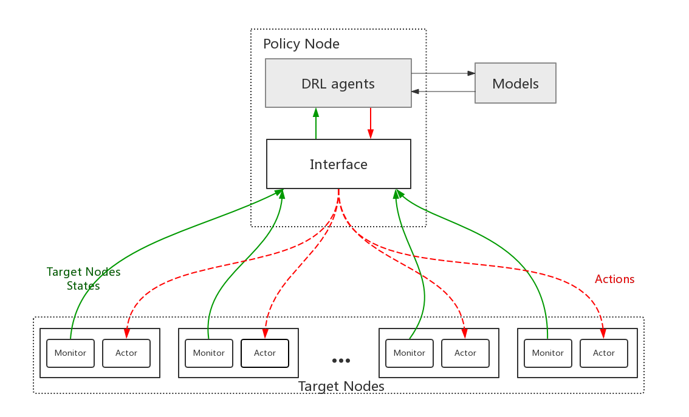

|
|
I'm currently a Master student at UCAS advised by Professor Cheng Yaodong and Professor Wang Lu. My work lies in the intersection between distributed storage and machine learning, with a focus on reinforcement learning for the promotion of distributed storage systems. |
|  |
ReinforceTuning: Performance Optimization of Lustre File System Based on Reinforcement Learning Zhang Wentao , Wang Lu, Cheng Yaodong HPC China 2018; Journal of Computer Research and Development [Project page] [Paper] |